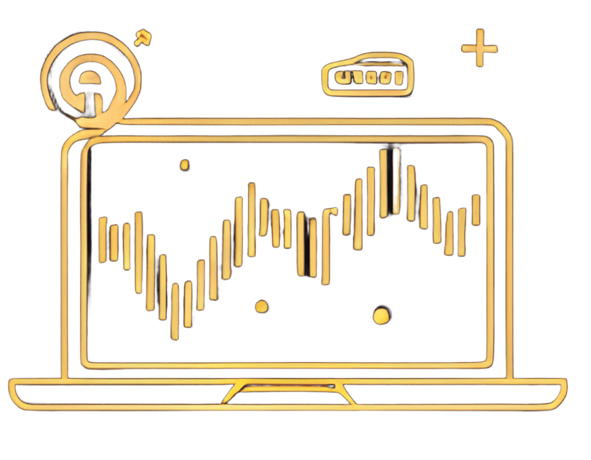

6 відео-уроків
Курс з психології трейдингу складається з 6 відео-уроків, кожен з яких розкриває ключові аспекти успішної торгівлі: емоційний контроль, управління ризиками, дисципліну, когнітивні упередження тощо. Відео мають чітку структуру, приклади з реального трейдингу та аналіз поведінки, а також доповнюються субтитрами, PDF-резюме та посиланнями на дослідження.